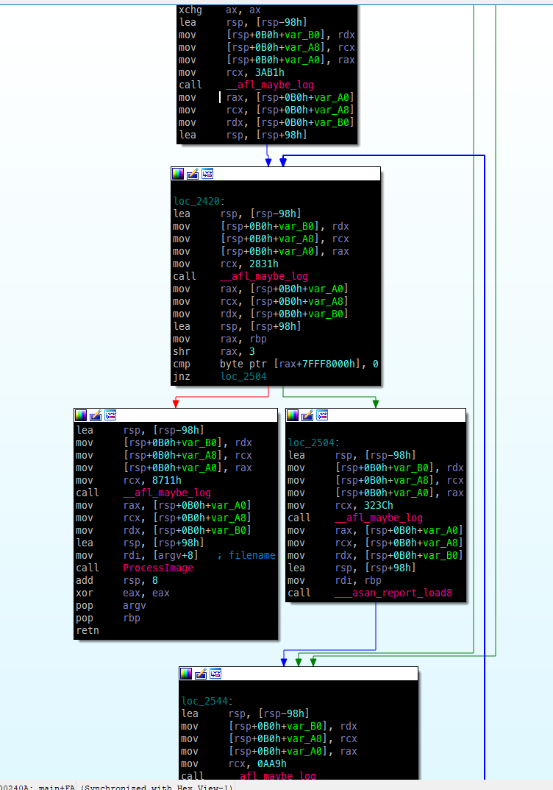
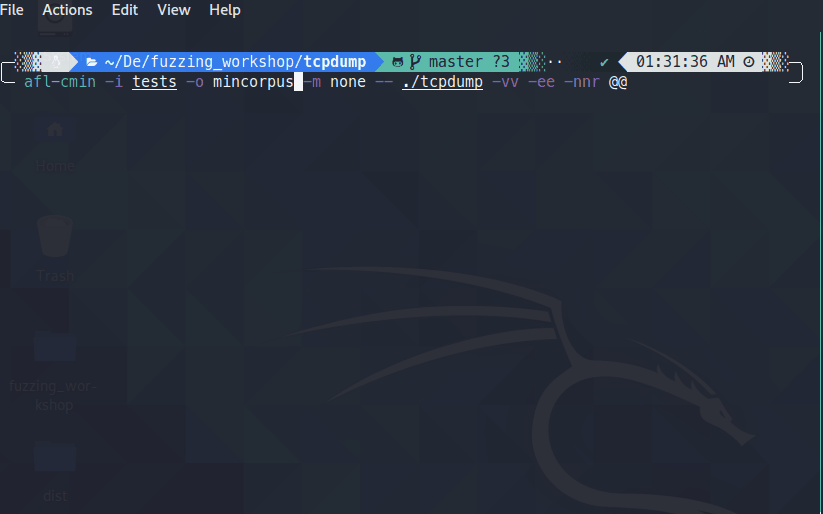

Welcome to Defcon30
Many people are interested in learning about vulnerability discovery but dont know where to start, this workshop is aimed at providing hands on details on how to fuzz open source softwares and findvulnerabilities on linux OS using various fuzzers like AFL, libfuzzer, honggfuzz etc.
What you will be doing?
- You will be setting up your own environment, fuzzers and tools.
- Working on various excercises.
- Will be running various fuzzers to fuzz software.
- Debugging crashes to find root cause of vulnerabilities.
- Will also do crash triage, corpus minimization etc.
This workshop contains various excercises on these topics, i will be walking you though the solutions as well.
What is needed?
- A laptop/desktop with atleast 16gb RAM,4 core processor and 40GB storage.
- Vmware/Virtualbox installed.
- Internet connection.
- willingness to learn :)
What you will learn and key take away
- What are common types of vulnerabilities - Buffer overflow, heap overflow, integer overflow, use after free, Double free, out of bound read/Write etc., few real life CVE source code analysis.
- Different types of fuzzers - dumb fuzzer, mutation fuzzer, coverage guided fuzzer
- How does coverage guided fuzzer works - Binary instrumentation, code coverage, basic blocks
- Fuzzing Process - corpus collection, corpus minimization, running fuzzers, crash triage, root cause analysis
- How to fuzz software with various fuzzers
Feel Free to -
- Ask questions, I don't want to speak alone :)
- Ask for help if you are facing any issue.
- Take a short break, its 4 hour long workshop.
- Correct me if I make any mistake.
Current: Principal Threat Researcher @ Sophos, Bangalore, India
Past: Senior Security Researcher @ McAfee,Bangalore,India
Past: Security Researcher @ Symantec
What I do?
- Vulnerability, exploits, malware analysis.
- Fuzzing and bug hunting.
- Have around 30+ CVEs in my name in various closed source and open source software.
- MSRC 2018-19 Most Valuable Researcher.
- MSRC Q1 2020 Top Contributing Researcher.
Official Blogs: https://news.sophos.com/en-us/author/hardik-shah/
Past Blogs: https://www.mcafee.com/blogs/author/hardik-shah/
Twitter: @hardik05
You can download workshop vm from here, it contains all the tools and softwares we will be using in our workshop:
Download VM from here:
Zip File password: infected
user name: kali
password: kali
What is a vulnerability?
Bug in the software which can be used to perform unwanted activities.
Example:
- if you send get request where uri length is more then 1000 bytes of data to a web server, it will crash.
- on opening an image file/office file application can crashes.
- On calling a particular System API with invalid parameter, system crashes.
Vulnerabilities can be used for:
- Remote code execution – These types of vulnerabilities allows someone to execute malicious code on the victim's system.
- Denial of service – These types of vulnerabilities can allow someone to crash the software or entire system.
- Privilege Escalation – These types of vulnerabilities allows someone to escalate their privilges from local account to admin account.
What is an Exploit?
- utilizing vulnerabilities to perform unwanted action on systems.
Common types of vulnerabilities found through fuzzing
Integer overflow/underflow, stack/heap overflow, out of bound read/write, use after free, double free
1. Integer Overflow
Vulnerability in integer data types, they way they store data.
Example:
unsigned int j;
int i;
Size of integer = 4 bytes
Max Value = 11111111 11111111 11111111 11111111
Each bit can be either 0 or 1. so it can denote 2 ue it can store is = 2^32
Signed vs unsigned?
MSB is used for signedness.
1= 00000000000000000000000000000001
-1 = 10000000000000000000000000000001
Max value for signed int = 0x7FFFFFFF
Max value for unsigned int = 0xFFFFFFFF
What happens in this case?
int i;
unsigned int j;
j = 0xFFFFFFFF + 1
Result will become 0, carry 1 bit will be truncated.
i = 0x7FFFFFFFF + 1
Result will become -0x8000000 (negative number) 
2. Integer Underflow
Size of integer = 4 bytes
Signed vs unsigned?
Range for signed int= -0x80000000 to 0x7FFFFFFF
Range for unsigned int = 0 to 0xFFFFFFFF
What happens in this case?
int i;
i = -0x80000000 – 1 = 0x7FFFFFFF
i = highest possible positive number.
3. Stack Buffer Overflow
Overflowing the local variable stored inside the stack. They can corrput data on the stack like return address and other variables.
Image Source: https://www.techtarget.com/searchsecurity/definition/buffer-overflow
Example:
Function foo(){
char var1[8];
char var2[100];
memcpy(var1,var2,sizeof(var2)); ü°™ stack overflow
}
Following is a real life example of a stack overflow vulnerability in vlc media player: reference: https://hackerone.com/reports/489102
4. Heap Buffer overflow
Heap are used when a process is not sure about the memory size. so they are allocated at run time by functions like malloc,calloc,realloc etc. Overflow in such memory allocation can corrupt various heap managment data.
Image Source: https://www.researchgate.net/figure/Example-of-Malloc-based-Heap-Overflow-Attack_fig2_4038604
Example:
function test(){
char *var1 = (char*) malloc(8);
char var2[100];
memcpy(var1,var2,sizeof(var2)); ü°™ heap overflow
}
5. Out of bound Read
Memory access or write operation at beyond the allowed limits of Stack memory. Can occur in both - Stack and Heap memory.
Example:
char a[10];
char b;
b=a[100]; ü°™OOB Read
a[100] = ‚Äòc'; ü°™OOB Write
Following is a real life out of bound read issue in libgd: reference: https://github.com/libgd/libgd
6. Out of bound Write
Memory access or write operation at beyond the allowed limits of heap memory. Can occur in both - Stack and Heap memory.
Example:
char* a = (char*)malloc(10);
char b;
b=a[100]; ü°™ OOB read
a[100] =‚Äòc'; ü°™OOB Write
7. Use after free
Using a memory after it has been freed.
Example:
char *buff = (char*)malloc(10);
free(buff);
buff[0]=‚Äòc'; ü°™ use after free
Following is a real life example of an use after free vulnerability in libtiff:
reference: https://www.asmail.be/msg0055359936.html
8. Double Free
Freeing allocated memory multiple time. Example:
char *buff = (char*)malloc(10);
free(buff);
free(buff); ü°™ double free
Quick Recap
- Different types of vulnerabilities
- Integer overflow, underflow
- Stack/Heap Buffer overflow
- Use After Free/Double Free
- Out of bound read/Write
- Some real life CVE examples
- Any questions so far?
Goal: To get an idea of how to find vulnerabilities by looking at the code.
Time: 10 minutes
Manually indentifying vulnerabilities in C program
//https://github.com/hardik05/Damn_Vulnerable_C_Program/blob/master/imgRead.c
#include<stdio.h>
#include<stdlib.h>
#include<string.h>
struct Image
{
char header[4];
int width;
int height;
char data[10];
};
int ProcessImage(char* filename){
FILE *fp;
char ch;
struct Image img;
fp = fopen(filename,"r");
if(fp == NULL)
{
printf("\nCan't open file or file doesn't exist.");
exit(0);
}
printf("\n\tHeader\twidth\theight\tdata\t\r\n");
while(fread(&img,sizeof(img),1,fp)>0){
printf("\n\t%s\t%d\t%d\t%s\r\n",img.header,img.width,img.height,img.data);
int size1 = img.width + img.height;
char* buff1=(char*)malloc(size1);
memcpy(buff1,img.data,sizeof(img.data));
free(buff1);
if (size1/2==0){
free(buff1);
}
else{
if(size1 == 123456){
buff1[0]='a';
}
}
int size2 = img.width - img.height+100;
//printf("Size1:%d",size1);
char* buff2=(char*)malloc(size2);
memcpy(buff2,img.data,sizeof(img.data));
int size3= img.width/img.height;
//printf("Size2:%d",size3);
char buff3[10];
char* buff4 =(char*)malloc(size3);
memcpy(buff4,img.data,sizeof(img.data));
char OOBR_stack = buff3[size3+100]
char OOBR_heap = buff4[100];
buff3[size3+100]='c';
buff4[100]='c';
if(size3>10){
buff4=0;
}
else{
free(buff4);
}
free(buff2);
}
fclose(fp);
}
int main(int argc,char **argv)
{
ProcessImage(argv[1]);
}
//https://github.com/hardik05/Damn_Vulnerable_C_Program/blob/master/imgRead.c
#include<stdio.h>
#include<stdlib.h>
#include<string.h>
struct Image
{
char header[4];
int width;
int height;
char data[10];
};
int ProcessImage(char* filename){
FILE *fp;
char ch;
struct Image img;
fp = fopen(filename,"r");
if(fp == NULL)
{
printf("\nCan't open file or file doesn't exist.");
exit(0);
}
printf("\n\tHeader\twidth\theight\tdata\t\r\n");
while(fread(&img,sizeof(img),1,fp)>0){
printf("\n\t%s\t%d\t%d\t%s\r\n",img.header,img.width,img.height,img.data);
int size1 = img.width + img.height; //Vulnerability: integer overflow
char* buff1=(char*)malloc(size1);
memcpy(buff1,img.data,sizeof(img.data)); //Vulnerability: no data buffer size/malloc success check?
free(buff1);
if (size1/2==0){
free(buff1); //Vulnerability: double free
}
else{
if(size1 == 123456){
buff1[0]='a'; //Vulnerability: use after free
}
}
int size2 = img.width - img.height+100; //Vulnerability: integer underflow
//printf("Size1:%d",size1);
char* buff2=(char*)malloc(size2);
memcpy(buff2,img.data,sizeof(img.data));
int size3= img.width/img.height;
//printf("Size2:%d",size3);
char buff3[10];
char* buff4 =(char*)malloc(size3);
memcpy(buff4,img.data,sizeof(img.data));
char OOBR_stack = buff3[size3+100]; //Vulnerability: out of bound read (stack)
char OOBR_heap = buff4[100];
buff3[size3+100]='c'; //Vulnerability: out of bound write (Stack)
buff4[100]='c'; //Vulnerability: out of bound write (Heap)
if(size3>10){
buff4=0; //memory leak?
}
else{
free(buff4);
}
free(buff2);
}
fclose(fp);
}
int main(int argc,char **argv)
{
ProcessImage(argv[1]);
}
Bug Hunting
Problem with the manual approach?
- Manual code audit.
- Takes lot of time. Very slow.
- Not possible to cover all the code paths.
- Large code base, not possible for a single person to do audit.
- Not very productive.
- Things can be missed.
- Can not cover all the scenarios.
Automated
- Automate bug finding. Very fast.
- Can cover most of the code paths.
- No need to worry about size of the code.
- Can be done by an individual.
- Can be automated further to notify about crashes, issues.
Fuzzing
Fuzzing is the process of automated bug finding. A fuzzer will generate or provide crafted input to a program and will monitor its behaviour. if its crashes then test case can be saved to further analysis and reproduction.
There are various types of fuzzers like:
1. Dumb fuzzers
Generate and process random inputs.
- Fuzzer - No idea of program path/input file format.
- User - No understanding of file format/network protocol is required.
- Can take lot of time (depending up on your luck).
- Random input
- no matter how much user knows, fuzzer will always generate random inputs.
Example: radamsa
https://github.com/hardik05/Damn_Vulnerable_C_Program
You need to be lucky to find bugs in complex program with these fuzzers.
2. Mutation/Generation fuzzers
Generate and process input based on predefined templates.
- Fuzzer - No idea of program path but can generate input files based on given template.
- User - Need understanding of input file or protocol.
- As good as a user knows about the things and can create templates.
Example: Peach, Sulley.
You can find bugs but need to do work on understanding and generating file templates or network protocol structure.
3. Coverage guideded fuzzers
Monitors program execution using compile time or runtime instrumentation and can generate new input files based on the paths taken.
- Fuzzer - aware of program paths being taken and can change input based on that.
- User - No idea of program path or file format is required.
- User don't need to do anything, fuzzer can handle input generation based on coverage data.
- Mutates file and check for new code path coverage/crash
- New Code path -> Add to Queue
- Crash -> Save the input ☺
Example: AFL,Honggfuzz,libfuzzer
Very useful and successful in finding bugs.
Interesting case study:
pulling jpeg out of thin air: https://lcamtuf.blogspot.com/2014/11/pulling-jpegs-out-of-thin-air.html
$ mkdir in_dir
$ echo 'hello' >in_dir/hello
$ ./afl-fuzz -i in_dir -o out_dir ./jpeg-9a/djpeg
Basic blocks, Instrumentation and Code Coverage
1. Basic block
A program is a collection of basic blocks preforming various operations.
- Consecutive lines of code with no branches. (code before program has to select a path/after taking a new path.)
- Entry point – control comes to this basic block.
- Exit point – control goes to another basic block.
Consider following code:
What it looks like in IDA:
2. Code Coverage
- Measure of the code covered by an input.
- Higher code coverage means higher the chances of finding bugs.
3. Instrumentation?
How to trace the program execution at runtime to check what code paths are being taken?
- Basic Method - add printf in the code and debug.(not useful for fuzzing)
- Doesn't provide much data
- Need to do manual work.
If source code is available.
- Compile time instrumentation - Adds instrumentation code at compile time. (used by afl/honggfuzz/libfuzzer when source code is avaialble)

- Can automate things like coverage measurement, Removes manual efforts.
If source code is not available.
- Runtime instrumentation - Used when source code is not available.
- Adds instrumentation code at runtime. (Mostly used on windows, Dynamorio/Pin tools etc.)
Steps involved in the fuzzing:
Corpus Collection
- A good file corpus will help to discover paths in short amount of time.
- Use regression/test case corpus if available for the software/libs.
Example:
- Image file corpus -> https://lcamtuf.coredump.cx/afl/demo/
- Multimedia file corpus -> http://samples.ffmpeg.org/
- Others -> Search github/google
Corpus Mimization
Why do we need to Minimize input corpus?
- Filter out the files which doesn't result in new path.
- Filter out large files.
How?
afl-cmin –i input –o mininput -- ./program @@
Root cause analysis
We found a crash by running fuzzer – now what?
- Which Field in file?
- What Value in the field?
- Which Condition in program? -> =>VULNERABILITY<=
Crash Triage
if we find 1-2 crashes then we can do manual analysis but what if we find gundred or thousands of crashes?
- Many may be duplicate?
- How to Triage them?
- Thats called crash triage.
There are various tools availble like:
Crashwalk, atriage, afl-collect
What is AFL?
- American Fuzzy Lop
- Created by Michael Zelwaski
- Fuzzer with instrumentation-guided genetic algorithm.
- Very successful in finding bugs in software
- Comes with set of utilities: afl-fuzz, afl-cmin, afl-tmin, afl-showmap etc..
- Fork server/Persistent mode.
- Mutate the files based on various strategies. Bitflip, byteflip, havoc, splice etc.
How does AFL works?
1. Program Flow tracking to monitor code paths
- Adds Compile time instrumentation.
- Provides compiler wrappers which add instrumentation code: afl-gcc,afl-g++, afl-clang, afl-clang++, afl-clang-fast, afl-clang-fast++
- Add instrumentation at each basic block
- Each basic block will have a unique random id.
- a callback function _afl_maybe_log will be added to each basic block
- a shared bitmap will be used to trace block hit count which is done by assembly equivalent of the following pseudo code:
cur_location = <COMPILE_TIME_RANDOM >; shared_mem[cur_location ^ prev_location ]++; prev_location = cur_location >> 1; A → B →C → D → E vs A → B → D → C → EHow does it look like in IDA
2. Fuzzing strategies - How AFL changes input?
Fuzzing Strategy | Details |
Bit Flip | Flips a bit i.e. 1 becomes 0, 0 becomes 1 - this can be done in steps of 1⁄1,2⁄1,4⁄1,8⁄8 ....32⁄8 (same strategy will be used for byteflip as well) |
Byte Flip | Flips a byte - this can be done in steps of 1⁄1,2⁄1,4⁄1,8⁄8 ....32⁄8 |
Arithmetic | Random arithmetic like addition/substraction of random values |
Havoc | Random strategy - anythings from bit/bytes/interest/splice/addition/subtraction |
Dictionary | User provided dictionary or auto discovered tokens. |
Interest | Replace content in original file with interesting values like: 0xff,0x7f etc – 8⁄8,16⁄8.. |
Splice | Splits and combine two or more files to get a new file. |
Reference:
https://github.com/google/AFL/blob/master/docs/technical_details.txt
3. Working Mode
Fork Server Vs Persistent Mode
Fork Server Mode
- Stop at main().
- Uses fork to create clone of the program.
- Process input and create another clone.
- Saves time in initializing program and thus offer speed improvements.
Persistent Mode
- Fork is still costly.
- Don't really need to kill child process after each run.
- Uses in process Fuzzing.
- Need to write a harness program,something like below:
This is very useful when you want to fuzz a selected part of the program.
Step involves in fuzzing a program with AFL
- compile program with afl compiler wrappers like afl-gcc, afl-g++, afl-clang, afl-clang++, afl-clang-fast, afl-clang-fast++
- collect corpus
- minimize corpus using afl-cmin
- run the fuzzer - afl-fuzz
Reference:
https://lcamtuf.blogspot.com/2014/10/fuzzing-binaries-without-execve.html
https://lcamtuf.blogspot.com/2015/06/new-in-afl-persistent-mode.html]
santizers helps in finding bugs at the eary stages of program execution.
There are various types of sanitizers which can be enabled at compile time by passing required options. you need to add following flags at compile time if you want to enable any of the sanitizers below:
1. ASAN (-fsanitize=address)
2. MSAN (-fsanitize=memory)
3. UBSAN (-fsanitize=undefined)
4. TSAN (-fsanitize=thread)
AFL has various environment variables like AFL_HARDEN, AFL_USE_ASAN and AFL_USE_MSAN etc. which can be used to enable support for this sanitizers as well as to do various fuzzing related customization. check here: https://github.com/mirrorer/afl/blob/master/docs/env_variables.txt
- Quick hands on excercise, go through above link and read about various env options.
Reference:
https://clang.llvm.org/docs/AddressSanitizer.html
https://clang.llvm.org/docs/UndefinedBehaviorSanitizer.html
Quick Recap
- What is fuzzing?
- What are different types of fuzers : dumb fuzzer, mutation/generation fuzzer, coverage guided fuzzer.
- Basic blocks, code coverage and instrumentation
- AFL internals - various fuzzing strategies, fork server, persistent mode
- Corpus collection, minimization
- Crash triage and root cause analysis
- Sanitizers
$ git clone https://github.com/google/AFL.git
$ cd AFL
$ make
$ cd llvm_mode
$ make
$ cd ..
$ make install
This will install various compiler wrappers and utilities like:
- afl-gcc,afl-clang,afl-clang-fast - these will be used to instrument and compile C code.
- afl-g++,afl-clang++,afl-clang-fast++ - these will be used to instument and compile C++ code.
- afl-gotcpu - utility to check available CPU cores on the system.
- afl-cmin - utility to minimize corpus files, reduces number of files.
- afl-showmap - shows coverage map.
- afl-tmin - utility to trim a single file and removing other data which is not needed, reduces data in a single file.
you can install it by typing following command:
$ sudo apt install clang llvm
Goal: learning how to fuzz a program with AFL.
Time: 15-20 minutes
Fuzzing Damn vulnerable C program with AFL
Lets download it first:
$ git clone https://github.com/hardik05/Damn_Vulnerable_C_Program.git
Let's compile it using afl-gcc/afl-clang(when nothing works, use afl-gcc,afl-g++) :
$ afl-gcc -fsanitize=address,undefined -ggdb -O0 imgRead.c -o imgRead_afl
Generate some seed corpus
$ mkdir in
$ echo "IMG" > in/1.img
Fuzz it using following command (explain various command line options)
$ afl-fuzz -i in -o out -m none -- ./imgRead_afl @@
you should see a screen like below:
It has various status messages.
not all are needed. you can read more about them here: https://github.com/google/AFL/blob/master/docs/status_screen.txt
- Quick excercise, go to out directory and analyze various files and directory contents.
In persistent mode, AFL only fuzzes part of the program and not the entire program. this is useful when you only want to fuzz a specific functionality in a complex software. this offer lot of speed improvements over the fork server mode. you can insert the code you want to fuzz inside a while loop like this:
while (__AFL_LOOP(1000)) {
<code you want to fuzz here>
}
Goal: Learning how to use persistent mode in AFL.
Time: 10-15 minutes
Change our imgRead.c to use persistent mode:
//https://github.com/hardik05/Damn_Vulnerable_C_Program/blob/master/imgRead.c
#include<stdio.h>
#include<stdlib.h>
#include<string.h>
struct Image
{
char header[4];
int width;
int height;
char data[10];
};
int ProcessImage(char* filename){
FILE *fp;
char ch;
struct Image img;
fp = fopen(filename,"r");
if(fp == NULL)
{
printf("\nCan't open file or file doesn't exist.");
exit(0);
}
printf("\n\tHeader\twidth\theight\tdata\t\r\n");
while(fread(&img,sizeof(img),1,fp)>0){
printf("\n\t%s\t%d\t%d\t%s\r\n",img.header,img.width,img.height,img.data);
int size1 = img.width + img.height;
char* buff1=(char*)malloc(size1);
memcpy(buff1,img.data,sizeof(img.data));
free(buff1);
if (size1/2==0){
free(buff1);
}
else{
if(size1 == 123456){
buff1[0]='a';
}
}
int size2 = img.width - img.height+100;
//printf("Size1:%d",size1);
char* buff2=(char*)malloc(size2);
memcpy(buff2,img.data,sizeof(img.data));
int size3= img.width/img.height;
//printf("Size2:%d",size3);
char buff3[10];
char* buff4 =(char*)malloc(size3);
memcpy(buff4,img.data,sizeof(img.data));
char OOBR = buff3[size3];
buff3[size3]='c';
if(size3>10){
buff4=0;
}
else{
free(buff4);
}
free(buff2);
}
fclose(fp);
}
int main(int argc,char **argv)
{
ProcessImage(argv[1]);
}
Here is the solution:
/*
Author: Hardik Shah
Email: hardik05@gmail.com
Web: http://hardik05.wordpress.com
*/
//a vulnerable c program to explain common vulnerability types
//fuzz with AFL
#include<stdio.h>
#include<stdlib.h>
#include<string.h>
struct Image
{
char header[4];
int width;
int height;
char data[10];
};
int ProcessImage(char* filename){
FILE *fp;
char ch;
struct Image img;
while (__AFL_LOOP(1000)) { //this is for persistent mode.
fp = fopen(filename,"r");
if(fp == NULL)
{
printf("\nCan't open file or file doesn't exist.");
exit(0);
}
printf("\n\tHeader\twidth\theight\tdata\t\r\n");
while(fread(&img,sizeof(img),1,fp)>0){
printf("\n\t%s\t%d\t%d\t%s\r\n",img.header,img.width,img.height,img.data);
//integer overflow 0x7FFFFFFF+1=0
//0x7FFFFFFF+2 = 1
//will cause very large/small memory allocation.
int size1 = img.width + img.height;
char* buff1=(char*)malloc(size1);
//heap buffer overflow
memcpy(buff1,img.data,sizeof(img.data));
free(buff1);
//double free
if (size1/2==0){
free(buff1);
}
else{
//use after free
if(size1 == 123456){
buff1[0]='a';
}
}
//integer underflow 0-1=-1
//negative so will cause very large memory allocation
int size2 = img.width - img.height+100;
//printf("Size1:%d",size1);
char* buff2=(char*)malloc(size2);
//heap buffer overflow
memcpy(buff2,img.data,sizeof(img.data));
//divide by zero
int size3= img.width/img.height;
//printf("Size2:%d",size3);
char buff3[10];
char* buff4 =(char*)malloc(size3);
memcpy(buff4,img.data,sizeof(img.data));
//OOBR read bytes past buffer
char OOBR = buff3[size3];
//OOBW write bytes past buffer
buff3[size3]='c';
if(size3>10){
//memory leak here
buff4=0;
}
else{
free(buff4);
}
free(buff2);
}
fclose(fp);
}//persistent mode loop ends here
}
int main(int argc,char **argv)
{
ProcessImage(argv[1]);
}
Compile it:
$ afl-clang-fast -fsanitize=address,undefined -g imgRead.c -o imgRead_persistent
$ afl-fuzz -i in/ -o out_per/ -m none -- ./imgRead_persistent @@
Check the speed difference between fork mode and persistent mode.
you can run multiple instances of AFL on your system in Master and Slave mode. this will help in utilizing all the cpu cores and finding bugs and will improve fuzzing speed.
First lets see how many cores machine have, type this command:
$ afl-gotcpu
afl-gotcpu 2.57b by <lcamtuf@google.com>
[*] Measuring per-core preemption rate (this will take 1.00 sec)...
Core #0: CAUTION (114%)
Core #1: AVAILABLE (99%)
Core #2: AVAILABLE (103%)
Core #6: AVAILABLE (109%)
Core #3: AVAILABLE (100%)
Core #7: AVAILABLE (105%)
Core #5: AVAILABLE (102%)
Core #4: AVAILABLE (106%)
>>> PASS: You can run more processes on 7 to 8 cores. <<<
you can see that this machine has 8 cores so we can run 8 AFL instance. lets fuzz sample C program now. you need to add -M for master instance and -S to all the slave instance. they can sync up with each other.
so run following commands:
$ screen -S master
$ afl-fuzz -M master -i in/ -o out/ -m none -- ./imgRead_afl @@
Press ctrl+d to detach from screen session, then type following to create another screen session:
$screen -S slave1
$ afl-fuzz -S slave1 -i in/ -o out/ -m none -- ./imgRead_afl @@
Only 1 master should be there but multiple slaves can be run. try this out.
Following screenshot shows, how it looks:
Goal: Learning how to use afl in parallel mode to utilize available CPU cores.
Time: 10-15 minutes
- Fuzz Damn Vulnerable C program by running 1 master and < n slaves>
- Check output directory, what you see there? how many folders?
If you don't have source code then you can use Qemu mode to fuzz the binaries. for this go to AFL/qemu_mode and run following commands:
$ sudo ./build_qemu_support.sh
it will complain about some missing dependency so we need to install following packages:
$ sudo apt install libtool-bin
$ sudo apt install bison
$ sudo apt install libglib2.0-dev
then run again:
$ sudo ./build_qemu_support.sh
but latest version of qemu has some bug so again build script will fail. open ./build_qemu_support.sh look for following:
tar xf "$ARCHIVE" || exit 1
change it to following to avoid unpacking failure:
tar xf "$ARCHIVE" --exclude qemu-2.10.0/roms/u-boot/scripts/Kconfig || exit 1
after that run again:
$ sudo ./build_qemu_support.sh
again build will fail with following error:
254 | _syscall0(int, gettid)
| ^~~~~~
TOPDIR/tmp/work/x86_64-linux/qemu-native/3.1.0-r0/qemu-3.1.0/linux-user/syscall.c:185:13: note: in definition of macro ‘_syscall0'
185 | static type name (void) \
| ^~~~
for this we need to use a hack, open qemu/linux-user/syscall.c file and look for following at line 191 and 265 respectivly:
static type name (void)
static int gettid
just remove static and change it to following:
type name (void)
int gettid
after that again run build script:
$ sudo ./build_qemu_support.sh
it will take sometime to compile and compilation should succeed. After that go to AFL directory and install:
$ AFL/qemu_mode# cd ..
$ sudo make install
this will install afl-qemu-trace which is needed to use qemu mode. you are done installing it. Now lets compile our C program with gcc, type following commands:
gcc imgRead.c -o imgRead_qemu
After that lets fuzz it in Qemu mode, we need to give option -Q for it:
afl-fuzz -Q -i in/ -o out/ -- ./imgRead_qemu
you should be able to see afl fuzzing screen.
Quick Recap
- Compiling and installing AFL
- Persistent mode
- Parallel fuzzing
- Qemu mode or blackbox fuzzing
Some helpful GDB commands:
help <command> - displays help
b <filename:linenumber> - breakpoint
disable b <breakpoint> - disable breakpoint
enable b <breakpoint> - enable breakpoint
info b - info on breakpoints
si - step one instruction
s - step till new source line
ni - next instruction (step over)
n - next line (step over)
r - run
c - continue
fi - execute till return
print <var> - prints value of variable
set <var> - change value of the variable
Open imgRead_afl in GDB and provide crash file path with r option as shown below:
$ gdb ./imgRead_afl
(gdb) r out/crashes/id:000000,sig:06,src:000000,op:havoc,rep:128
Example command:
afl-gcc -fsanitize=address,undefined imgread.c -ggdb -O0 -o imgread_afl
AFL_DONT_OPTIMIZE is a flag which disable optimization like "-ggdb -O0"
Goal: to learn root cause analysis using GDB.
Time: 15-20 minutes
- Debug few crashes you found using afl and figure out following:
- What is the condition in the program which is causing this crash?
- What are the fields and values in crash files which is causing this crash?
This will be needed when you analyze any real world vulnerability/exploit.
Installing crashwalk
First we will install exploitable gdb plugin as this is needed by crashwalk and the path is hardcoded, so run following commands:
mkdir ~/src
cd ~/src
git clone https://github.com/jfoote/exploitable.git
After we need to install golang, type this command:
$ sudo apt install golang
and then we can install crashwalk:
$ go get -u github.com/bnagy/crashwalk/cmd/...
it will install crashwalk binaries: cwtriage, cwdump, cwfind in ~/go/bin directory. Modify your system path so that these crashwalk binaries are available:
export PATH=$PATH:~/go/bin
Triaging Crashes with cwtriage
First lets see what all options it have:
$ cwtriage
cwtriage runs crashfiles with instrumentation and outputs results in various
formats
Usage: cwtriage -root /path/to/afl-dir [-match pattern] -- /path/to/target -in @@ -out whatever
( @@ will be substituted for each crashfile )
-afl
Prefer the AFL recorded crashing command, if present
-every int
Run every n seconds (default -1)
-f string
Template filename to use while running crash
-ignore string
Directory skip pattern ( go regex syntax )
-match string
Match pattern for files ( go regex syntax )
-mem int
Memory limit for target processes (MB) (default -1)
-output string
Output format to use: [json pb text] (default "text")
-root string
Root directory to look for crashes
-seen
Include seen results from the DB in the output
-seendb string
Path to BoltDB (default "crashwalk.db")
-strict
Abort the whole run if any crashes fail to repro
-t int
Timeout for target processes (secs) (default 60)
-tidy
Move crashes that error under Run() to a tidy dir
-workers int
Number of concurrent workers (default 1)
It has built in afl support, so you can type following command:
$ cwtriage -afl -root out
you will see something like this:
2020/11/04 09:12:16 ------
Command: ./imgRead_afl out/crashes/id:000000,sig:06,src:000000,op:havoc,rep:128
File: out/crashes/id:000000,sig:06,src:000000,op:havoc,rep:128
Memory Limit: -1
Timeout: 60
Error: no crash detected
---------
---CRASH SUMMARY---
Filename: out/crashes/id:000001,sig:06,src:000000,op:havoc,rep:32
SHA1: d5c3cd9fe0c7e4d95f1a27d86e2ad34b496b1d67
Classification: PROBABLY_NOT_EXPLOITABLE
Hash: 50aaa03fc7675a1c8baaa05d808c21dd.50aaa03fc7675a1c8baaa05d808c21dd
Command: ./imgRead_afl out/crashes/id:000001,sig:06,src:000000,op:havoc,rep:32
Faulting Frame:
ProcessImage @ 0x00000000004c6568: in /mnt/b/myworkwsl/Damn_Vulnerable_C_Program/imgRead_afl
Disassembly:
0x00000000004c6553: mov rcx,QWORD PTR [rsp+0x8]
0x00000000004c6558: mov rdx,QWORD PTR [rsp]
0x00000000004c655c: lea rsp,[rsp+0x98]
0x00000000004c6564: mov eax,r14d
0x00000000004c6567: cdq
=> 0x00000000004c6568: idiv r15d
0x00000000004c656b: mov r14d,eax
0x00000000004c656e: mov r12,r13
0x00000000004c6571: mov WORD PTR [r13+0x7fff800c],0x200
0x00000000004c657b: movsxd r15,eax
Stack Head (2 entries):
ProcessImage @ 0x00000000004c6568: in /mnt/b/myworkwsl/Damn_Vulnerable_C_Program/imgRead_afl
main @ 0x00000000004c76c8: in /mnt/b/myworkwsl/Damn_Vulnerable_C_Program/imgRead_afl
Registers:
rax=0x000000000000ffff rbx=0x00007ffffffedd00 rcx=0x0000000000000000 rdx=0x0000000000000000
rsi=0x0000000000000000 rdi=0x00007ffffffedb81 rbp=0x00007ffffffeddb0 rsp=0x00007ffffffedc80
r8=0x00007ffffffecf50 r9=0x0000000000000002 r10=0x00000000004d5973 r11=0x00000000004d5973
r12=0x00007ffffffedca4 r13=0x00000fffffffdb90 r14=0x000000000000ffff r15=0x0000000000000000
rip=0x00000000004c6568 efl=0x0000000000010202 cs=0x0000000000000033 ss=0x000000000000002b
ds=0x0000000000000000 es=0x0000000000000000 fs=0x0000000000000000 gs=0x0000000000000000
Extra Data:
Description: Floating point exception signal
Short description: FloatingPointException (17/22)
Explanation: The target crashed on a floating point exception. This may indicate a division by zero or a number of other floating point errors. It is generally difficult to leverage these types of errors to gain control of the processor.
---END SUMMARY---
2020/11/04 09:12:18 ------
Command: ./imgRead_afl out/crashes/id:000002,sig:06,src:000000,op:havoc,rep:128
File: out/crashes/id:000002,sig:06,src:000000,op:havoc,rep:128
Memory Limit: -1
Timeout: 60
Error: no crash detected
You will notice that not all the inputs are causing crash. you will see a message like this:
Error: no crash detected
this is because we have not given ASAN options to cwtriage. so run it again with following:
$ ASAN_OPTIONS="abort_on_error=1:symbolize=0" cwtriage -afl -seen -root out
This will create a filenamed crashwalk.db. you can then use cwdump to dump the crash info:
$ cwdump crashwalk.db
you can either redirect this output to a text file or use |more to go through them.
you can also use cwfind to find all the files with the given hash. use following command:
$ cwfind -db crashwalk.db b9bdc301f6ec7b1f38a58796cac7369e.dcde4daab363919b57d3903b9ffcea8c
you can see all the files which causes same crash.
Quick Recap
- Root cause analysis using GDB
- Crash triage using crashwalk
Get the source code of tcpdump and libpcap.
git clone https://github.com/the-tcpdump-group/tcpdump.git
cd tcpdump
git clone https://github.com/the-tcpdump-group/libpcap.git
cd libpcap
Compile it using AFL
CC=afl-gcc CFLAGS="-g -fsanitize=address -fno-omit-frame-pointer" LDFLAGS="-g -fsanitize=address -fno-omit-frame-pointer" ./configure
sudo make && make install
it will complain about some missing dependencies, run following commands:
sudo apt install flex bison
your compilation should be successfull.
How to get test corpus?
- Check tests folder ☺
How to minimize it?
use afl-cmin, run following command:
afl-cmin –i tests –o mincorpus –m none -- ./tcpdump –vv –ee –nnr @@
You should see a screenshot something like below: 
Lets, Fuzz it!
afl-fuzz –i mincorpus –o fuzzoutput –m none -- ./tcpdump –vv –ee –nnr @@
you should see something like this:
Fuzzing libtiff
- Get the source code:
git clone https://gitlab.com/libtiff/libtiff.git
- compile using AFL Wrappers.
- Collect Test corpus from internet.
- Fuzz various utilities like tiffinfo, tiffcrop etc.!
Quick Recap
- How to compile Tcpdump/libtiff with AFL
- How to generate and minimize corpus
- How to fuzz it with AFL
- Any questions?
Installing honggfuzz
git clone https://github.com/google/honggfuzz.git
make
sudo apt install binutils-dev libunwind-dev
sudo make install
How to compile program with HonggFuzz?
hfuzz-clang -fsanitize=address imgRead.c -g –O0 -o imgRead_hfuzz
Fuzzing the program
honggfuzz -i input -–workspace output -- ./imgRead ___FILE___
What is libfuzzer
- libfuzzer is a coverage guided fuzzer comes with clang.
- in process fuzzing, like AFL persistent mode.
What is the difference?
- you need to write a harness and call a specific function:
LLVMFuzzerTestOneInput(const uint8_t *Data, size_t Size)
your harness should call this function and not the standard main() function. when you compile your program with clang and libfuzzer support, it will call its main function, and then it will call LLVMFuzzerTestOneInput function with mutated data.
this function expects 2 arguments:
Data - this is the actual fuzzed or mutated data which will be passed to API you want to fuzz.
Size - size of the Data.
Installing libfuzzer
Latest version of clang have libfuzzer in built. you just need to install clang.
sudo apt install clang
how to compile program with libfuzzer?
clang -g -O1 -fsanitize=fuzzer mytarget.c # Builds the fuzz target w/o sanitizers
clang -g -O1 -fsanitize=fuzzer,address mytarget.c # Builds the fuzz target with ASAN
clang -g -O1 -fsanitize=fuzzer,signed-integer-overflow mytarget.c # Builds the fuzz target with a part of UBSAN
clang -g -O1 -fsanitize=fuzzer,memory mytarget.c # Builds the fuzz target with MSAN
Compiling Damn Vulnerable C program with clang and libfuzzer support
use following command to compile it:
clang -fsanitize=fuzzer,address,undefined -g imgRead_libfuzzer.c -o imgRead_libfuzzer
Fuzzing the program
./imgRead_libfuzzer
Replicating crashes
./imgRead_libfuzzer <crash file>
source & reference: https://llvm.org/docs/LibFuzzer.html
Goal: How to fuzz a program with libfuzzer.
Time:15-20 minutes
- Modify imgRead.c program to use LLVMFUzzerTestOneInput function rather then using main function.
Hints:
- you get mutated data and size of data, so you dont need to open any file.
- you just need to treat data as file contents i.e. it is a buffer which you just read from the file.
- you may need to do some typecasting to change it to structure Image.
Solution is in the next page :)
First we need to change our program and need to add LLVMFuzzerTestOneInput function. so lets modify it:
/*
Author: Hardik Shah
Email: hardik05@gmail.com
Web: http://hardik05.wordpress.com
*/
//a vulnerable C program to explain common vulnerability types
//fuzz with libfuzzer
#include<stdio.h>
#include<stdlib.h>
#include<string.h>
#include<stdint.h>
struct Image
{
char header[4];
int width;
int height;
char data[10];
};
int LLVMFuzzerTestOneInput(const uint8_t* data, size_t size){
if(size<=12){
return 0;
}
struct Image *img;
img = (struct Image*)data;
//integer overflow 0x7FFFFFFF+1=0
//0x7FFFFFFF+2 = 1
//will cause very large/small memory allocation.
int size1 = img->width + img->height;
char* buff1=(char*)malloc(size1);
//heap buffer overflow
memcpy(buff1,img->data,sizeof(img->data));
free(buff1);
//double free
if (size1/3==0){
free(buff1);
}
else{
//use after free
if(size1/20 == 0){
buff1[0]='a';
}
}
//integer underflow 0-1=-1
//negative so will cause very large memory allocation
int size2 = img->width - img->height+100;
//printf("Size1:%d",size1);
char* buff2=(char*)malloc(size2);
//heap buffer overflow
memcpy(buff2,img->data,sizeof(img->data));
//divide by zero
int size3= img->width/img->height;
//printf("Size2:%d",size3);
char buff3[10];
char* buff4 =(char*)malloc(size3);
memcpy(buff4,img->data,sizeof(img->data));
//stack OOBR read bytes past buffer
char OOBR_stack = buff3[size3];
char OOBR_heap = buff4[size1];
//stack OOBW write bytes past buffer
buff3[size3]='c';
buff4[size1]='c';
if(size3/5==0){
//memory leak here
buff4=0;
}
else{
free(buff4);
}
free(buff2);
}
Compiling with clang and libfuzzer support
use following command to compile it:
clang -fsanitize=fuzzer,address,undefined -g imgRead_libfuzzer.c -o imgRead_libfuzzer
Fuzzing the program
./imgRead_libfuzzer
but it stops at first crash. how can we run it continously?
try this commands:
./imgRead_libfuzzer -jobs=10
./imgRead_libfuzzer -fork=1 -ignore_crashes=1
Press Ctrl+c to cancel.
Quick recap
- How to install honggfuzz and fuzz a program with it?
- How to install libfuzzer and fuzz a simple program with it?
✅ Always report to vendor first.generally vendor have security@vendor.com email id. you can also check their website for security contact.
✅ Dont disclose anything until vendor releases the patch.
✅ Vendors may reward you with bug bounty for your work!
- Try AFL++ - https://aflplus.plus/ Community driven, active development, lot of inbuild features compared to vaniall AFL. Support multiple architecutre, blackbox binary fuzzing, custom mutators and has good folks to support.
- fuzz various open source software using any of the fuzzer discussed in this workshop.
- Try winafl - https://github.com/googleprojectzero/winafl if you want to fuzz windows binaries.
- Fuzzing can help in finding diffrent types of bugs and help to improve overall quality of software.
- Fuzzing can save time,resources as it can be automated.
- Fuzzing should be part of SDLC.
- Sometimes you get broken and non working stuff but you willl earn alot.
- But in the end its worth it!
- Questions?
My youtube channel on fuzzing: Click here
Twitter: @hardik05
email: hardik05[AT]gmail[DOT]com
Website: fuzzing.in
Thanks everyone, hope you have enjoyed this workshop as much as I have enjoyed delivering it and creating contents and various excericses for it.